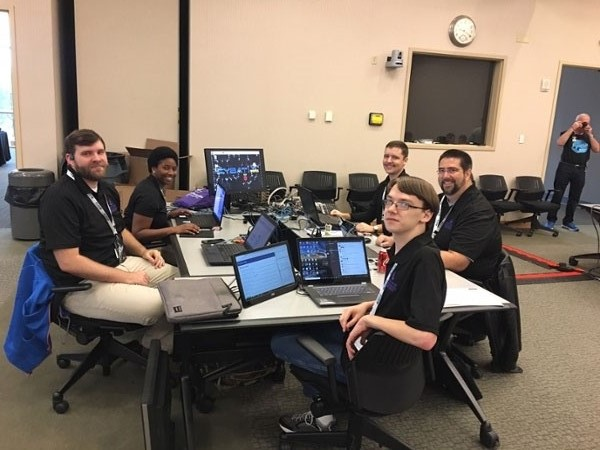

About Us

The MGA Cyberknights is a student led organization with the purpose of furthering student's understanding of Cybersecurity concepts and represent MGA in national and international cyber-related competitions. Together, members work with alumni and professors to create, organize, and participate in Cybersecurity competitions. They are dedicated to helping others and informing on Cybersecurity and IT topics and ideas. In addition, through Cyberknights, students can converse with and talk to classmates, alumni, or professors who have similar interests and passions in Cybersecurity and IT.
Cyberknights meetings usually consist of educational Cybersecurity and Cyber-CTF (Capture the Flag) related hands-on demonstrations and discussions.
Meeting Information:
- Cyberknights meeting are held in room 257 at the PCS 250 building.
- Weekly meetings on Wednesday at 3pm.
- In person will still be PSC 250 and virtual will be on Discord as well.